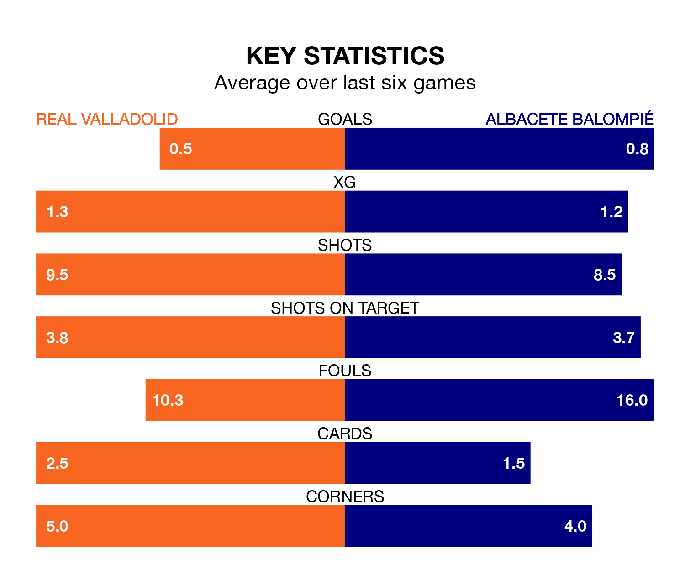

Albacete Balompié come to the Estadio Municipal José Zorrilla to play Real Valladolid on late Monday in terrible form, having collected just two points from their last six games.
The visitors have drawn two and lost four of their last six fixtures, while Valladolid have a win and two draws.
In the last 10 years, Valladolid and Albacete have played each other on seven occasions. Valladolid won four of them and Albacete three.
On average, Valladolid scored 1.4 goals and Albacete 1.4 in those matches.
Their last meeting was on September 1, when Albacete won 2-0 at home.
With 28 goals in 25 games so far this season, Valladolid are scoring at below the league average rate with 1.1 goals per game. But they are conceding fewer than average too, letting in 25 goals at a rate of 1.0 per game.
Albacete, meanwhile, are average scorers, with 1.2 goals per game. They have conceded 1.5 goals per game.
The home side are sixth in the table after 25 games, of which they have won 12 and drawn four, earning 40 points.
The visitors are 11 places behind Valladolid in 17th, with six wins and eight draws putting them on 26 points.
Valladolid's last match was on February 3, a 0-0 draw against Leganés.
Albacete drew 1-1 with FC Cartagena last time out, also on February 3, with Álvaro Rodríguez Pérez on the scoresheet.
Updated: 14:59 (UTC), 05/02/24